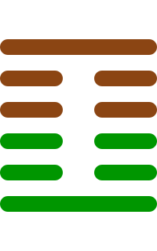

第二十七卦
颐卦

卦辞
贞吉。观颐，自求口实。
颐卦象征养育、滋养与养生。卦辞意为：坚守正道吉祥。观察养育，自己寻求口中之食。颐卦教导我们要正确地养育自己和他人的身心。
彖传
颐贞吉，养正则吉也。观颐，观其所养也。自求口实，观其自养也。天地养万物，圣人养贤以及万民。颐之时大矣哉。
彖传说：颐贞吉，是养正则吉祥。观察颐，是观察其所养。自己寻求口中之食，是观察其自养。天地养育万物，圣人养育贤能以及万民。颐的时义很大啊。
象传
山下有雷，颐。君子以慎言语，节饮食。
象传说：山下有雷，就是颐卦。君子应当效法这种精神，谨慎言语，节制饮食。雷在山下象征内敛，要注意言行的修养。
爻辞
初九：舍尔灵龟，观我朵颐，凶
舍弃你的灵龟，观察我的朵颐，凶险。
初九爻位于最下方，舍本逐末。舍弃自己的灵龟而去观察别人的朵颐，凶险，表示不重视自身修养。
六二：颠颐，拂经于丘颐，征凶
颠倒颐养，拂逆经于丘颐，征伐凶险。
六二爻得中得正，方法错误。颠倒正常的养育方式，违背常理，征伐凶险，表示方法不当。
六三：拂颐，贞凶。十年勿用，无攸利
拂逆颐养，坚守正道凶险。十年不要用，无所利。
六三爻位置不当，严重错误。违背颐养之道，即使坚守正道也凶险，长期无利，表示严重问题。
六四：颠颐吉，虎视眈眈，其欲逐逐，无咎
颠倒颐养吉祥，虎视眈眈，其欲迫切，没有灾害。
六四爻接近君位，有所成就。颠倒颐养反而吉祥，虎视眈眈表示专注，没有灾害，表示有成就。
六五：拂经，居贞吉，不可涉大川
拂逆经，居守正道吉祥，不可渡过大河。
六五爻居中尊位，安居守正。违背常规但居守正道吉祥，不宜大动作，表示稳定为好。
上九：由颐，厉吉，利涉大川
由颐养，危险吉祥，利于渡过大河。
上九爻位于极点，成就显著。由颐养之道，虽有危险但吉祥，利于大行动，表示大成就。